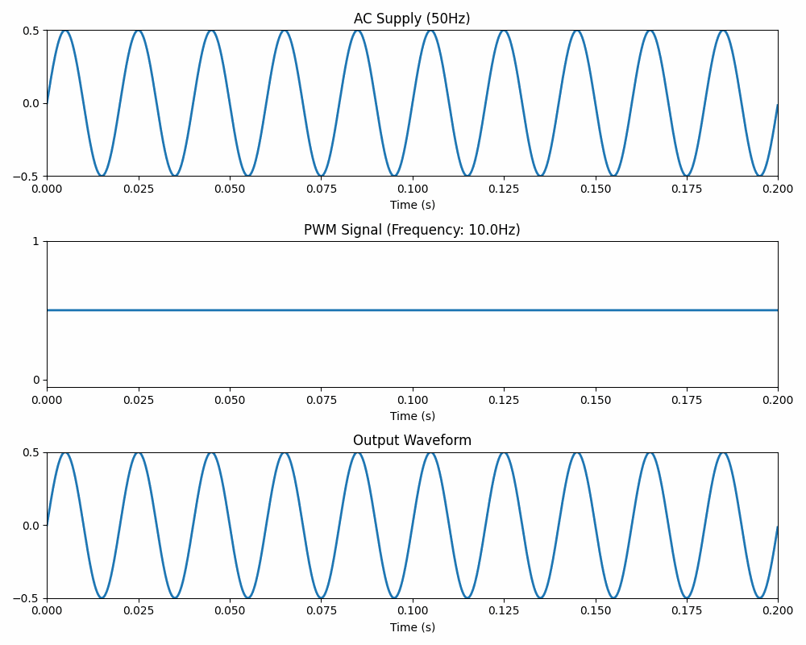
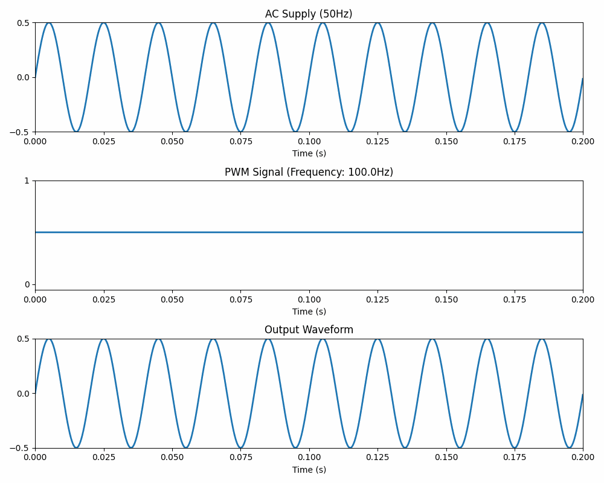
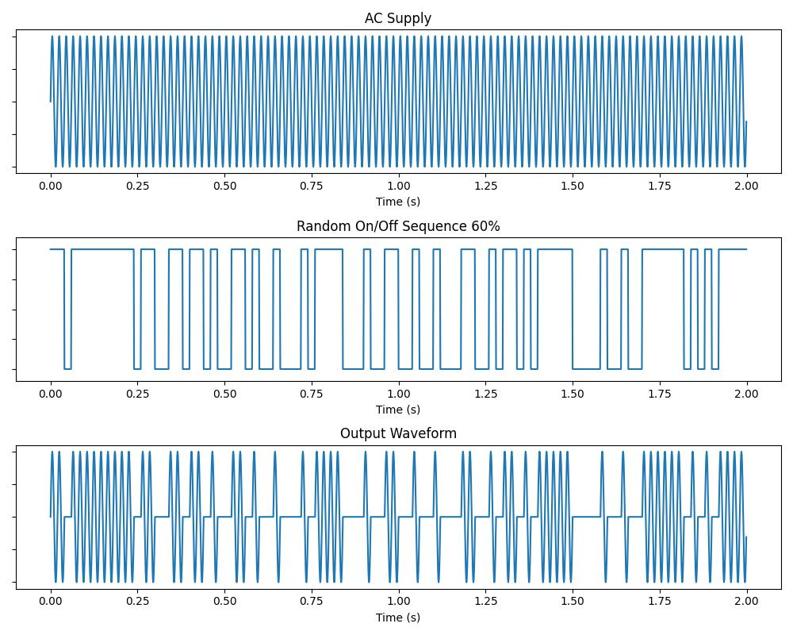

This document outlines a proposal for an efficient method of AC power control which has several benefits over traditional methods:
Traditional methods of AC power control, and their drawbacks
Random Integral Wave Control
Optimization using bitshift operations
Implementation using ESP32
Results and next steps
Control of DC electricity is relatively simple and is achieved by modulating resistance. Since the current is inversely proportional to the resistance, increasing or decreasing the resistance in the circuit will decrease or increase the current flowing through it.
However, controlling AC current is less straightforward, due to its constantly changing polarity and amplitude. AC's cyclic nature makes it more complex to regulate, as adjustments must be made to both voltage and frequency. Furthermore, the potential for harmonics in AC systems often requires sophisticated filtering techniques to maintain stability and efficiency.
Since modulating resistance is not effective in controlling AC, the alternative is to modulate the current by switching the supply on and off very rapidly, proportionally blocking some of the current for part of the time while at other times allowing the current to pass through. This switching can then be controlled electronically using relays- either mechanical or solid-state.
There are various different traditional approaches to modulating AC power in this way, each with its own advantages and disadvantages:
The simplest form of AC control is a thermostat. This delivers full power until a set temperature threshold is reached, and then switches the power off until the temperature falls to a lower threshold. In many situations this is adequate for power control, but there will be significant fluctuations in temperature.
For more precise control, a low frequency pulse-width modulation can be used to control the power. With a period in the range of 1-10Hz, PWM will provide a controlable switching of the supply according to the set duty cycle, switching ON for a proportion of the time and OFF for the remainder. In many situations this is adequate, but the switching is slow and can cause temperature fluctuation, and the regular switching of the supply can induce harmonics. Also when several channels are switched simultaneously the combined current draw exerts a regularly fluctating load on the supply.

Phase Angle control uses synchronized Pulse Width Modulation at double the frequency of the supply to switch it on for part of the AC half-wave and off for the remainder of the half-wave (or, more commonly, the other way around). This approach gives highly granular control, and is commonly used in household lighting circuits. However, since it switches during the part of the wave cycle when current is present, the rapid change in voltage and resulting spike can create EMF interference, making it unsuitable for use in the viscinity of sensitive measuring equipment. Switching under load can also shorten the lifespan of relays.

The Integral Wave Burst Firing method effectively solves some of the drawbacks of the methods previously discussed. "Integral Wave" means the integrity of the complete wave form is maintained- by switching only at the "zero cross" point - the point in time where the supply voltage crosses zero Volts. This ensures that the EMF generated by switching is minimized. Using a pattern of "bursts" to switch the supply ON and OFF proportionally, the current can be effectively modulated. However, using traditional electronic methods, the patterns for burst firing can contain repetition. Any regular pattern of switching can induce harmonics.
A solution is proposed using a randomization algorithm to output a proportionally controlled, yet irregular, integral wave pattern which will not produce harmonics or EMF interference. The proposal is demonstrated in code for the popular ESP32 twin-core microcontroller.

In the controller code (C++), the patterns used to control ON and Off switching are represented as "bitsets"- arrays of a fixed length which contain boolean values "1" or "0", stored in memory as individual bits. There is one bitset to control each channel.
Using a random number generator, a proportional number of ON and OFF cycles, represented by "1"s and "0"s, is distributed in each bitset, representing a relay pattern over a given timeframe.
1010000011011101001011011101101111110110101011111110111101101011011011011000001011100001011010110110
By iterating through the bits of the bitset incrementally and writing their contents to an output pin, the pattern can control the relay to modulate the AC supply. Controlling the number of ON cycles will modulate the current delivered over the given time period in a randomized manner. When the increment counter reaches its maximum, at the end of the bitsets, it resets to zero and a new set of bitsets is generated, based on the updated value of the current desired power levels for each channel.
Switching in a random pattern, always at the zero cross point to maintain cycle integrity, this approach will produce minimial EMF generation compared to phase-angle chopping, while the control of individual cycles will reduce output ripple and harmonics when compared to low-frequency PWM control.
When controlling multiple channels, the switching algorithm can be optimized to minimize power consumption. This can be achieved by ensuring that the minimum possible number of channels are in the ON state concurrently.
The following 3-stage algorithmic approach is proposed to implement this principle:
First, the bitset for each channel is populated incrementally with ones proportional to the desired power level. For example, with a given bitset length of 100, a bitset with a power level of 30% would contain 30 ones followed by 70 zeros:
1111111111111111111111111111110000000000000000000000000000000000000000000000000000000000000000000000
Based on user inputs, the bitset generator populates bitsets for each channel, for example 10%, 30%, 60%, 90%:
Populated Bitsets:
Ch 0 10/100 1111111111000000000000000000000000000000000000000000000000000000000000000000000000000000000000000000
Ch 1 30/100 1111111111111111111111111111110000000000000000000000000000000000000000000000000000000000000000000000
Ch 2 60/100 1111111111111111111111111111111111111111111111111111111111110000000000000000000000000000000000000000
Ch 3 90/100 1111111111111111111111111111111111111111111111111111111111111111111111111111111111111111110000000000
Then each bitset is rotated based on the cumulative sum of the power level of the previous channels, so that the ON period of each channel starts at the moment after the previous one. This gives the minimum overall intersection of ON cycles across the channels. Even though the rotated ON periods wrap around and may then coincide with other channels, the overall result still represents the best possible optimization to minimise intersection over the total time period, in other words with the least possible number of coincident ones at any given time. The bit shifting operation runs on each channel sequentially:
Bitsets optimized for minimal intersection:
Ch 0 10/100 1111111111000000000000000000000000000000000000000000000000000000000000000000000000000000000000000000
Ch 1 30/100 0000000000111111111111111111111111111111000000000000000000000000000000000000000000000000000000000000
Ch 2 60/100 0000000000000000000000000000000000000000111111111111111111111111111111111111111111111111111111111111
Ch 3 90/100 1111111111111111111111111111111111111111111111111111111111111111111111111111111111111111110000000000
Finally, the positions of the bits are shuffled, each channel in the same way, using a standard Fisher–Yates shuffling algorithm. By shuffling all the bitsets in the same way, the optimization for intersection is maintained, but the positions are randomized. The resulting output gives a set of randomized yet proportional patterns of ON and OFF states, which is optimized to minimize the total load at any given time.
Globally shuffled bitsets:
Ch 0 10/100 0000110000000000000000000000010000000001000100000000000000000100100000000010000000001000000000001000
Ch 1 30/100 0101001100100010110100100010000000001000010000000001000010010000000100100101110100010110100101000001
Ch 2 60/100 1010000011011101001011011101101111110110101011111110111101101011011011011000001011100001011010110110
Ch 3 90/100 0111111111110111111111101111110011011011111111100111110111111111111111111111111111111111111111111111
To achieve the goal of minimal EMF generation, switching of the AC supply must take place as close as possible to the zero cross point. The synchronization is achieved using a zero cross detector which monitors the AC supply and delivers a short pulse to the microcontroller every time a zero cross is detected. The microcontroller must then set the pin state of the output pins as quickly as possible.
The ESP32 microcontroller was chosen for its low cost, popularity, speed and dual cores. To achieve high speed responses, the proposed code uses FreeRTOS realtime task handling and maximizes the response speed by running the pulse detection function exclusively on the second core. Rather than detecting pulses with an interrupt which can be slow, the code uses brute-force polling at around 333kHz, giving a reliable response time of 3 microseconds. Switching a relay with such a fast response would limit the switching voltage to below 1V on a 220V AC supply, resulting in ultra low EMF generation. Using bit-level control minimizes memory requirements and further optimizes speed -the regeneration and random shuffling of the bitsets is fast enough that it barely affects the response time each time the bitsets are updated, with a maximum recorded response time of 6 microseconds, and with serial debug prints disabled, this would be expected to be lower.
The code successfully modulates the output state of 4 channels, demonstrated with LEDs in place of relays. The user can input new power levels via serial which will update as the cycle is reset. It has an inbuilt pulse generator which can be toggled via serial, generating a pulse on an output pin which can be connected to the detector input to simulate the AC supply. The code has also been successfully tested using an external function generator pulse at 50Hz. The immediate next step will be to test it with a real zero cross detector on an AC supply, controlling 4 relays.
The overall goal is to integrate thermocouples and PIDs for each channel to give automated control over temperature, and finally to package with a user interface using buttons and an OLED display screen, and perhaps a websocket for data logging and remote tuning of the PIDs.
D Shirley 02/04/2024